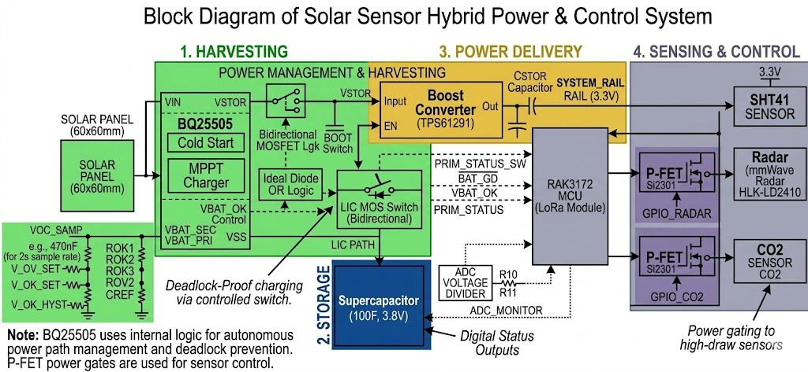

Bill of Materials
Block Diagram
Sensors
Energy Budget
Firmware TODO
Schematic PDF
Spreadsheet (.xlsx)
Functional view of the
hybrid harvest + storage architecture: BQ25505 MPPT, LIC supercap path, ideal-diode OR, TPS61291 boost to 3.3 V, and RAK3172-controlled P-FET sensor gating. Legacy Rev2 PCB detail (RA-08, 0.22 F, TPS613221A) remains in
SolarSensorSchematicRev2.pdf and the BOM until the next PCB spin.
Rev2 PCB docs (BOM, Sensors, Energy Budget) still describe the earlier RA-08 / 0.22 F / TPS613221A board.
Use this page as the system architecture reference until those sheets are regenerated for the hybrid spin.
Block diagram (authoritative)

Source image: pics/BlockDiagram.jpg.
Simplified flow: schematic_block_diagram.mmd.
Harvesting
Solar input 60×60 mm panel Energy source Feeds BQ25505 VIN_DC Harvester BQ25505 Cold start + MPPT charger VOC_SAMP, V_OV_SET, V_OK_SET, V_OK_HYST via divider network Path logic Ideal diode OR LIC vs primary routing Deadlock-proof charging via controlled LIC MOS switch Status VBAT_OK Storage OK flag Digital input to RAK3172 Status BAT_GD Battery / path good Digital input to RAK3172
Storage
LIC path 100 F · 3.8 V supercap Main energy store LIC PATH from harvester; digital status outputs Monitor R10 / R11 divider ADC_MONITOR Supercap voltage sense into MCU ADC Hold-up C_STOR (boost input) Local bulk At boost input / system rail origin
Power delivery
Boost TPS61291 Step-up regulator Raises storage voltage to system rail Rail SYSTEM_RAIL 3.3 V MCU + always-on loads Powers RAK3172 and SHT41
Sensing & control
MCU / radio RAK3172 LoRa module LoRaWAN Monitors PRIM_STATUS_SW, BAT_GD, VBAT_OK, PRIM_STATUS, ADC_MONITOR Temp / RH SHT41 I²C · always on On SYSTEM_RAIL 3.3 V — low standby Radar HLK-LD2410 mmWave GPIO_RADAR → P-FET Si2301 high-side gate; power-gated high-draw sensor CO₂ CO₂ sensor GPIO_CO2 → P-FET Si2301 high-side gate; power-gated high-draw sensor
RAK3172 signal map
MCU interfaces (from block diagram)
PRIM_STATUS_SW Input Primary-path switch status Hybrid path selection feedback BAT_GD Input Battery / storage good From BQ25505 power-path logic VBAT_OK Input OK threshold met Harvester OK output PRIM_STATUS Input Primary storage status Path / storage state ADC_MONITOR Input (ADC) Supercap voltage Via R10/R11 divider — firmware threshold gating GPIO_RADAR Output Radar P-FET gate Enable HLK-LD2410 rail (Si2301) GPIO_CO2 Output CO₂ P-FET gate Enable CO₂ sensor rail (Si2301)
Design notes
BQ25505 uses internal logic for autonomous power-path management and deadlock prevention. P-FET (Si2301) power gates are used for high-draw sensors; SHT41 stays on the 3.3 V rail. Firmware must read ADC_MONITOR and status inputs before enabling radar / CO₂ or LoRa TX. No customer pre-charge or install procedure — cold-start + charge-wait is a firmware requirement.